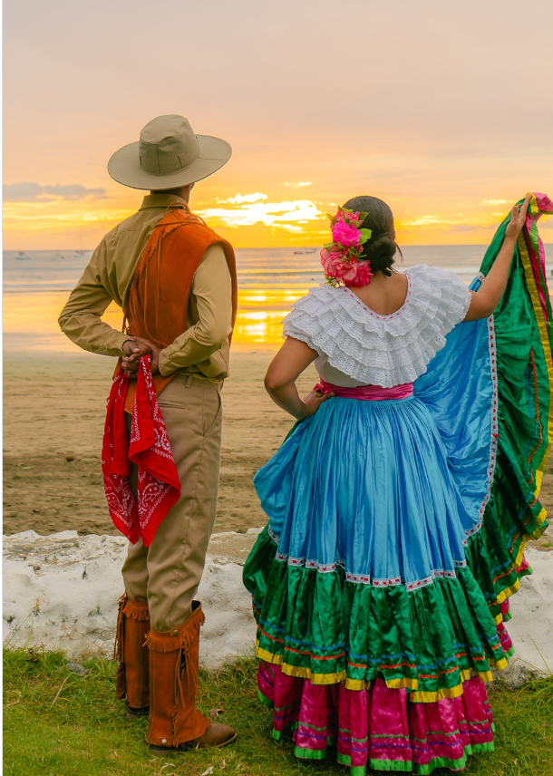

Why Choose Maya Escencia
Long before Tulum became a name whispered by travelers seeking turquoise seas and jungle calm, it was home to Itzel and Jose — a young Mayan couple, they grew up surrounded by the hum of cicadas and the whispers of their ancestors in the wind.
Jose was a carpenter, his hands strong and patient, shaping wood the way his father and grandfather had. Iztel was a dreamer, known for her warm laugh and her skill in weaving hammocks dyed with colors drawn from flowers. They married young, and for years they lived simply — he crafting doors and canoes, she weaving and tending to their small garden.
One stormy night, as rain fell heavy on their roof, Iztel shared a dream with Jose, of a house by the sea. “A house made of wood and stone, open to the wind. Travelers came from far places, and we shared food and stories. They left lighter, as if they carried part of our home with them.” Jose smiled at her dream, but in her eyes, he saw something that stirred him — that same quiet conviction that had once led their ancestors to build temples from stone and faith.
Months later, they sold what little they had and traveled east, following the scent of salt until they reached Tulum — then still a sleepy village by the sea, dotted with palms and the distant ruins of their ancestors’ temples. They found a small plot of land between the jungle and the beach. It was wild and tangled, but Itzel placed her hand on the earth and said, “This is where the wind stops to rest.”
Together, they built a small inn, Jose built the frames from reclaimed wood, carved each beam with Mayan glyphs for peace, wind, and family. Itzel hung hammocks between palms and filled the rooms with woven textiles. She called it Maya Esencia.
Years passed. Maya Esencia grew — after the passing of Itzel and Jose, their two children Yaritzah and Miguel took over. Maya Escencia is now an all exlusive hotel/resort tucked away in the quiter side of Tulum. Full of history, authenticity and passion, Maya Escencia looks forward to having you as a guest. Come experience the joys of tradition!
